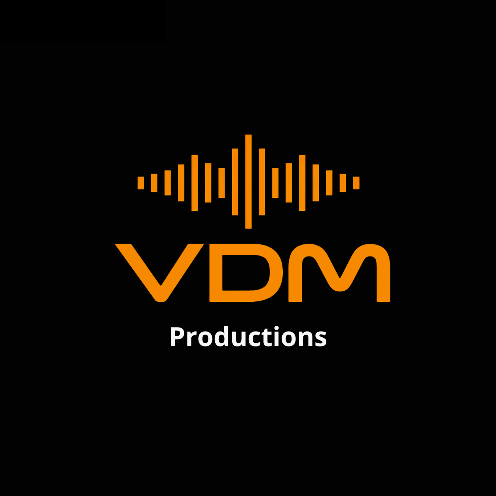
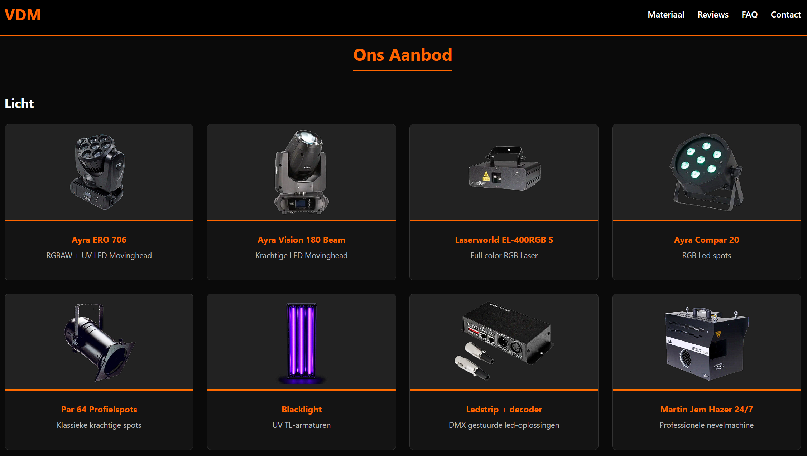

Client Project / Showcase Website
VDM Productions
Moderne, responsieve website voor een verhuurder van licht- en geluidsapparatuur.
HTML5
CSS3
Screenshots & Previews

Over dit project
Voor VDM Productions is een strakke website ontwikkeld die volledig aansluit bij de professionele uitrusting van het verhuurbedrijf. Het doel was om bezoekers in één oogopslag een helder overzicht te geven van het aanbod in licht- en geluidstechniek, met een sterke focus op gebruikersgemak en snelle offerteaanvragen.
Belangrijkste functionaliteiten & kenmerken
- ✓ Volledig responsive design
- ✓ Duidelijke categorisering van licht- en geluidsverhuur
- ✓ Geoptimaliseerd voor snelle laadtijden en SEO
- ✓ Directe en laagdrempelige contactopties